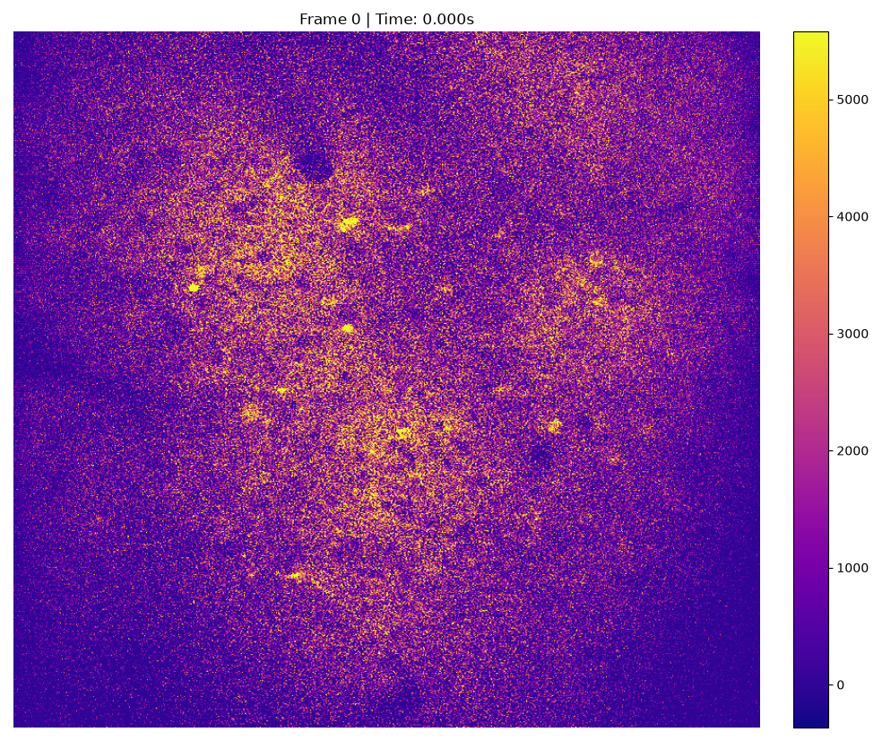
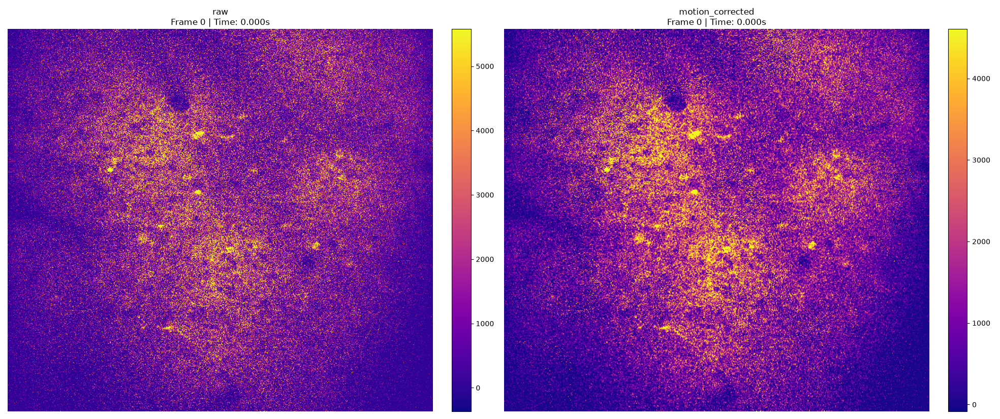
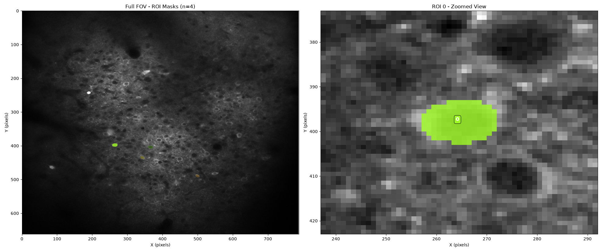
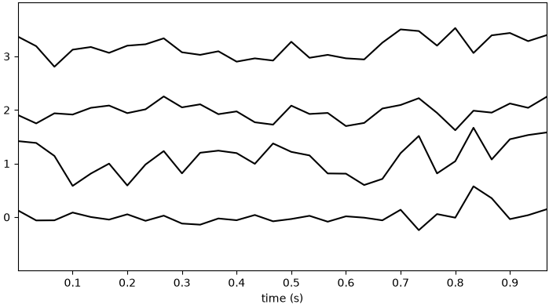

Note
Go to the end to download the full example code or to run this example in your browser via Binder.
Simple suite2p example#
In this notebook, we showcase the usage of photon-mosaic to run a full multiphoton analysis in Python.
This will include motion correction, segmentation, and extraction of fluorescence traces.
We will use photon-mosaic’s default algorithms for this analysis, which essentially wraps the popular suite2p.
We will plot intermediate results along the way, which can be explored interactively. To be able to interact with the plots,
please run this notebook on BinderHub or download this notebook to your computer.
import matplotlib
import matplotlib.pyplot as plt
from photon_mosaic.core.roianalyzer import create_roi_analyzer
from photon_mosaic.preprocessing import compute_motion, register_motion
from photon_mosaic.sample_data import download_suite2p_google_drive
from photon_mosaic.segmentation import run_segmentation
from photon_mosaic.widgets.rois import plot_rois
from photon_mosaic.widgets.series import plot_imaging_series
from spikeinterface.widgets import plot_traces
matplotlib.use("module://ipympl.backend_nbagg")
import warnings
warnings.filterwarnings("ignore", message="Sparse invariant checks")
We will run our analysis on suite2p’s example data (via a photon_mosaic.sample_data function that downloads and caches it from their Google drive), on 4000 frames. Note that this is a toy example to showcase functionality: its result is intentionally far from perfect, illustrating how users must evaluate and optimise their settings in order to get good results from their data. This is expected.
We start by opening the suite2p sample data as an Imaging object and plotting it.
imaging = download_suite2p_google_drive(1)
_ = plot_imaging_series(imaging, backend="ipywidgets", colormap="plasma")

Next, we compute the motion correction and apply it. Again, we print information and plot the registered data alongside the raw.
motion = compute_motion(imaging=imaging, method="suite2p")
registered_imaging = register_motion(imaging=imaging, motion=motion)
_ = plot_imaging_series(
{"raw": imaging, "motion_corrected": registered_imaging}, backend="ipywidgets", colormap="plasma"
)

Next, we use suite2p with its default settings and “cellpose” algorithm to segment regions of interest (ROIs) in the registered image.
segmented_rois = run_segmentation(
registered_imaging,
method="suite2p",
remove_existing_folder=True,
algorithm="cellpose",
)
suite2p runs a default classifier under the hood, labelling the segmented ROIs as cells or not-cells. We select the ROIs labelled as cells and plot them:
cell_ids = [id for id in segmented_rois.roi_ids if segmented_rois.get_property("iscell", [id])]
cell_rois = segmented_rois.select_rois(cell_ids)
_ = plot_rois(cell_rois, registered_imaging, backend="ipywidgets")

Finally, we extract the DeltaF over F traces by extracting fluorescence and neuropil signal from each cell.
roi_analyzer = create_roi_analyzer(cell_rois, registered_imaging)
roi_analyzer.compute("neuropil")
roi_analyzer.compute("fluorescence", use_neuropil=True)
df_over_f = roi_analyzer.compute("df_over_f").get_data(outputs="recording")
fluorescence (no parallelization): 0%| | 0/7 [00:00<?, ?it/s]
fluorescence (no parallelization): 14%|█▍ | 1/7 [00:01<00:10, 1.81s/it]
fluorescence (no parallelization): 29%|██▊ | 2/7 [00:02<00:04, 1.01it/s]
fluorescence (no parallelization): 43%|████▎ | 3/7 [00:02<00:02, 1.37it/s]
fluorescence (no parallelization): 57%|█████▋ | 4/7 [00:03<00:01, 1.65it/s]
fluorescence (no parallelization): 71%|███████▏ | 5/7 [00:03<00:01, 1.87it/s]
fluorescence (no parallelization): 86%|████████▌ | 6/7 [00:03<00:00, 2.02it/s]
fluorescence (no parallelization): 100%|██████████| 7/7 [00:04<00:00, 2.42it/s]
fluorescence (no parallelization): 100%|██████████| 7/7 [00:04<00:00, 1.69it/s]
We can again plot the DF/F traces
traces_widget = plot_traces(df_over_f, backend="ipywidgets", show_channel_ids=True, channel_ids=cell_ids[:10])
_ = plt.figure(traces_widget.figure)

This concludes our simple example of using photon-mosaic to run a full multiphoton analysis in Python.
Total running time of the script: (18 minutes 9.152 seconds)